BOLOGNA 11 aprile 2025
Data Science panoramica introduttiva
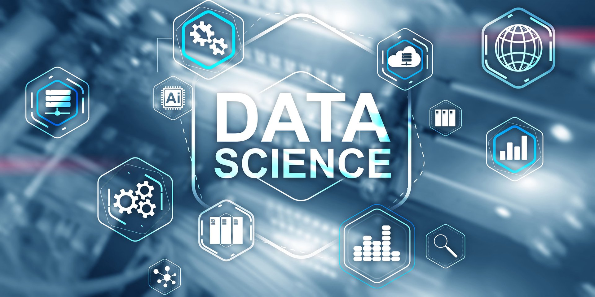
Participants presentation
Agenda
Introduction
DBMS, Big Data, Cloud solutions
Data Analytics
Data Management and Data Governance
Computer programming
Business Intelligence & Visualization of Data
Statistics & Probability
Machine Learning (ML)
Artificial Intelligence (AI) __ __

Agenda
Introduction
DBMS, Big Data, Cloud solutions
Data Analytics
Data Management and Data Governance
Computer programming
Business Intelligence & Visualization of Data
Statistics & Probability
Machine Learning (ML)
Artificial Intelligence (AI) __ __

Why is Data and Data Science Important?
Data has become the fuel of industries as companies require data to function, grow and improve their businesses
Analysing a large amount of data to derive meaningful insights, with the help of Data Scientists assist companies in making valuable (and rationalized) decisions
Real world problems can be solved with Data Science
The number of roles for Data Scientists has grown by 650 % since 2012.
About 11.5 Million jobs will be created by 2026 according to the U.S. Bureau of Labor Statistics.
Data Science has applications in several fields
Data Science is a very robust field that best fits people who enjoy experimentation and problem-solving
What is Data Science?
“Data Science is about _ extraction , preparation , analysis , visualization , and maintenance _ of information. It is a _ cross-disciplinary _ field which uses _ scientific _ _ methods _ and processes to draw _ insights _ from data.”
Client Requirements
Domain Knowledge
Highlight important criteria
Easier explanation of technical concepts
Research & Analysis
Statistical Knowledge
Database Languages (SQL, Hadoop)
Mathematical & Statistical Aptitude
Machine Learning
Computer Science
Data Preprocessing
Designing Methods
Tuning & Fitting the Model
Data Infrastructure
Python, R and other languages
Classification and Regression Models
Data Science Skills
Inferential Statistics
Descriptive Statistics
Linear Algebra
Calculus
Excel
Python
R
SQL
Programming Knowledge
Agenda
Introduction
DBMS, Big Data, Cloud solutions
Data Analytics
Data Management and Data Governance
Computer programming
Business Intelligence & Visualization of Data
Statistics & Probability
Machine Learning (ML)
Artificial Intelligence (AI) __ __

What is a Database?
Formally, a database refers to a set of related data and the way it is organized. Access to this data is usually provided by a ” database management system ” ( DBMS ) consisting of an integrated set of computer software that allows users to interact with one or more databases and provides access to all of the data contained in the database.
The DBMS provides various functions that allow entry, storage and retrieval of large quantities of information and provides ways to manage how that information is organized.
Because of the close relationship between them, the term database is often used casually to refer to both a database and the DBMS used to manipulate it.
Definition: ‘A database is an organized collection of data, generally stored and accessed electronically from a computer system.’
Source: https://en.wikipedia.org/wiki/Database
Evolution of the Database | Original Databases
Original databases
Navigational databases such as the hierarchical database and the network database were the original systems used to store and manipulate data.
These early systems were simple but inflexible.
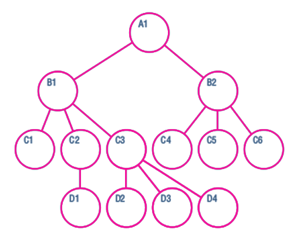
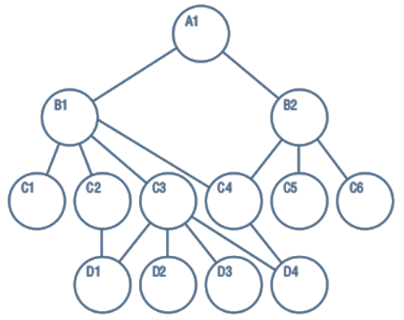
Hierarchical database background info: https://mariadb.com/kb/en/understanding-the-hierarchical-database-model/�“The earliest model was the hierarchical database model, resembling an upside-down tree. Files are related in a parent-child manner, with each parent capable of relating to more than one child, but each child only being related to one parent.”
Network database background info: https://mariadb.com/kb/en/understanding-the-network-database-model/ “The network database model was a progression from the hierarchical database model and was designed to solve some of that model’s problems, specifically the lack of flexibility. Instead of only allowing each child to have one parent, this model allows each child to have multiple parents”
Evolution of the Database | Relational Databases
Relational databases
In the 1980s, relational databases became popular.
Items in a relational database are organized as a set of tables with columns and rows.
The relational model allows any table to be related to any other by means of a common field
Relational database technology still provides the most efficient and flexible way to access structured information.
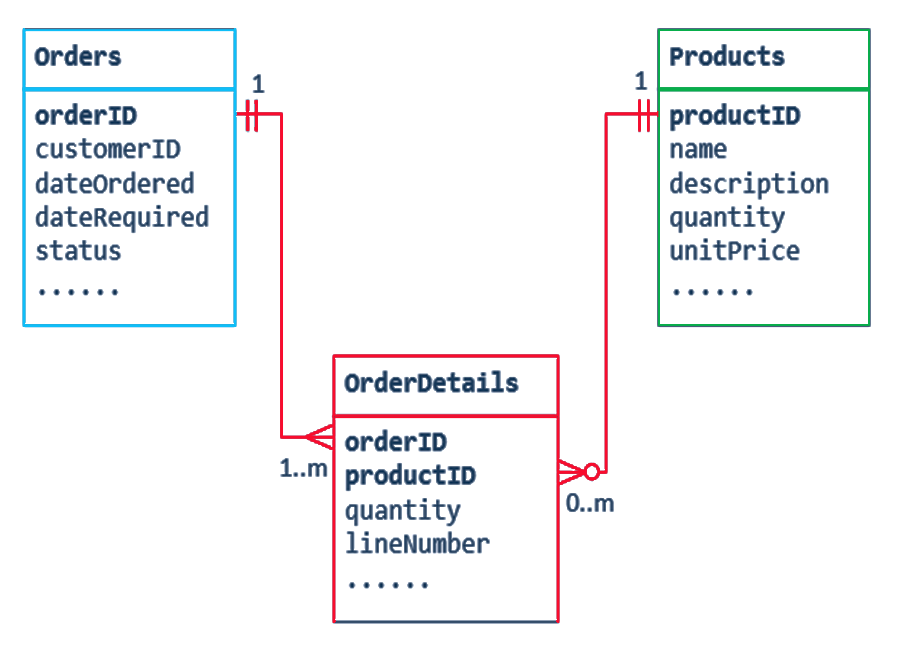
A relational database is a digital database based on the relational model of data, as proposed by E. F. Codd in 1970
Relational databases source: https://mariadb.com/kb/en/understanding-the-relational-database-model/ Image relational database:https://www3.ntu.edu.sg/home/ehchua/programming/sql/Relational_Database_Design.html
What is an RDBMS?
A software system used to maintain relational databases is a Relational Database Management System or RDBMS.
Widely known Relational Database Management Systems include:
MySQL
Oracle
Microsoft SQL Server
PostgreSQL
IBM DB2
Microsoft Access
There are also Cloud data warehouses, for example:

What is SQL?
SQL is an acronym for Structured _ _ Query _ _ Language
SQL is the standard language for dealing with Relational Databases.
SQL is often pronounced ‘ Sequel ’
SQL became a standard of the American National Standards Institute ( ANSI ) in 1986, and of the International Organization for Standardization ( ISO ) in 1987
Relational databases like MySQL, Oracle and MS SQL Server use ANSI SQL
Syntax of SQL is in plain English
What are tables, rows, fields and columns?
The data in a relational database is stored in database objects called tables. Below an example of the Customers table.
A table consists of rows (or records ) for every data entry
A row contains values for all the different fields in the table
A column contains values for a specific field for all the records in the table
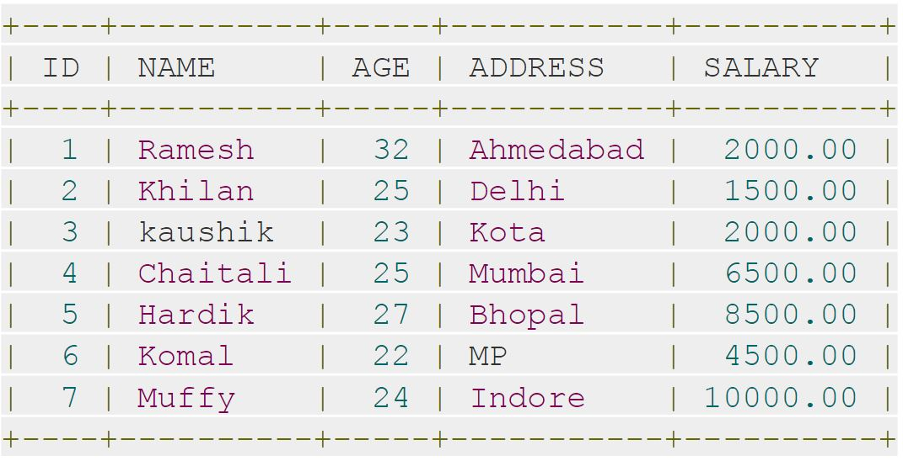
Evolution of the Database | NoSQL Databases (1/5)
NoSQL database types
There are four main NoSQL database types today:
Key/Value Stores
Document stores
Graph databases
Wide Column Stores
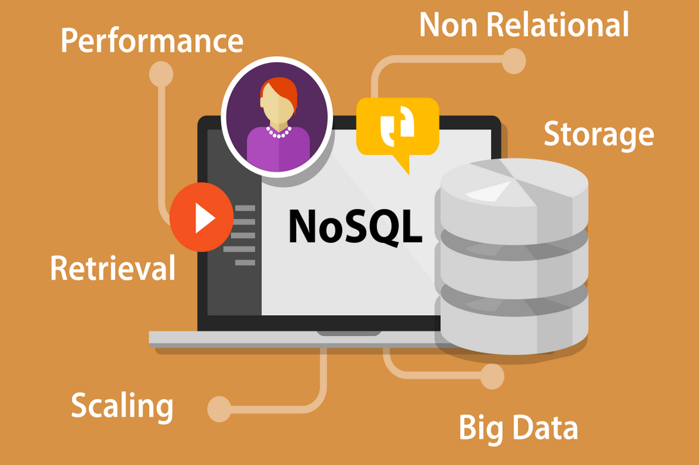
Key/Value Stores are the simplest NOSQL database model. They can just store pairs of keys and values and retrieve a value for a given key. Due to the simplicity of the model, they can ensure very high performance and scalability.
Document stores are designed to handle semi-structured data like XML or JSON. The main difference with the key/value stores is that the documents are processed and their internal structures can be used for indexing and other optimization purposes.
In a Graph database, data is represented as a graph in which each node is a record and each arc is a relationship between two nodes. They are optimized to represent complex data models
Wide Column Stores store data in tables, rows, and dynamic columns. They provide a lot of flexibility over relational databases because each row is not required to have the same columns. They are used by popular social networks like Twitter and Facebook to store content produced by their users.
Background - Key value store use cases: https://aerospike.com/what-is-a-key-value-store/
Background - Document store use cases: https://database.guide/what-is-a-document-store-database/
Background - Graph database use cases: https://neo4j.com/use-cases/
Background - Wide Column Store use cases: Cassandra: https://cassandra.apache.org/case-studies/
Evolution of the Database | NoSQL Databases (2/5)
Key/Value Stores are the simplest NOSQL database model. They can just store pairs of keys and values and retrieve a value for a given key. Due to the simplicity of the model, they can ensure very high performance and scalability.
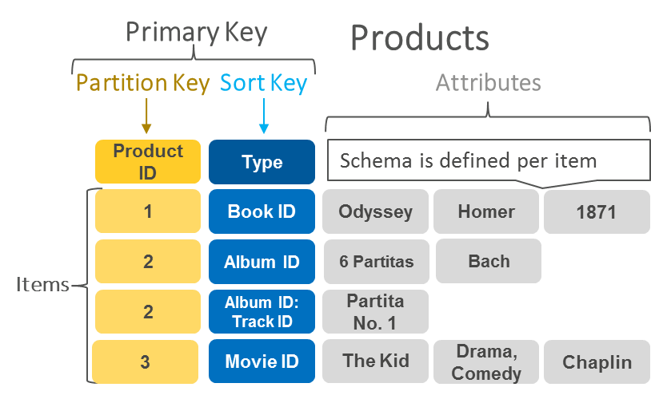
Key-value — A key-value data store is a type of database that stores data as a collection of key-value pairs. In this type of data store, each data item is identified by a unique key, and the value associated with that key can be anything, such as a string, number, object, or even another data structure.
Evolution of the Database | NoSQL Databases (3/5)
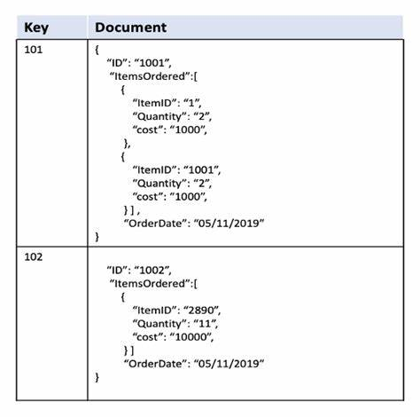
Document stores are designed to handle semi-structured data like XML or JSON. The main difference with the key/value stores is that the documents are processed and their internal structures can be used for indexing and other optimization purposes.
Document Database - You can transfer the application code object model directly into a document using several different formats. The most commonly used are JavaScript Object Notation (JSON), Binary JavaScript Object Notation (BSON), and Extensible Markup Language (XML).
Evolution of the Database | NoSQL Databases (4/5)
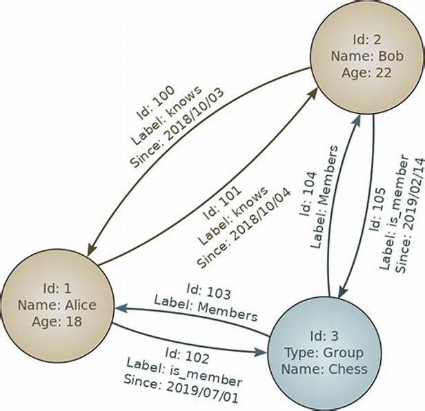
Graph database, data is represented as a graph in which each node is a record and each arc is a relationship between two nodes. They are optimized to represent complex data models
Graph — Graph databases are used to store and query highly connected data. Data can be modeled in the form of entities (also referred to as nodes, or vertices) and the relationships between those entities (also referred to as edges). The strength or nature of the relationships also carry significant meaning in graph databases.
Users can then traverse the graph structure by starting at a defined set of nodes or edges and travel across the graph, along defined relationship types or strengths, until they reach some defined condition. Results can be returned in the form of literals, lists, maps, or graph traversal paths. Graph databases provide a set of query languages that contain syntax designed for traversing a graph structure, or matching a certain structural pattern.
The network databases like CODSASYL are still more or less based on a hierarchical data model, thinking in terms of parent-child (or owner-member in CODASYL terminology) relationships. This also means that in network database you can’t relate arbitrary records to each other. For example, you may use a graph database to analyze what relationships exist between entities.
Network Database vs Graph Database
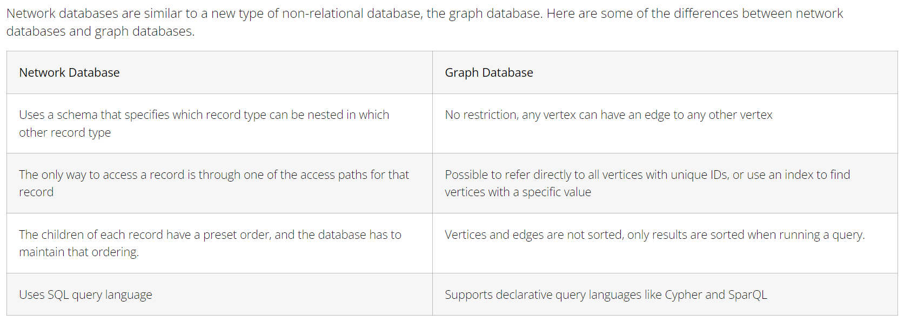
Graph — Graph databases are used to store and query highly connected data. Data can be modeled in the form of entities (also referred to as nodes, or vertices) and the relationships between those entities (also referred to as edges). The strength or nature of the relationships also carry significant meaning in graph databases.
Users can then traverse the graph structure by starting at a defined set of nodes or edges and travel across the graph, along defined relationship types or strengths, until they reach some defined condition. Results can be returned in the form of literals, lists, maps, or graph traversal paths. Graph databases provide a set of query languages that contain syntax designed for traversing a graph structure, or matching a certain structural pattern.
The network databases like CODSASYL are still more or less based on a hierarchical data model, thinking in terms of parent-child (or owner-member in CODASYL terminology) relationships. This also means that in network database you can’t relate arbitrary records to each other. For example, you may use a graph database to analyze what relationships exist between entities.
Evolution of the Database | NoSQL Databases (5/5)
Wide Column Stores store data in tables, rows, and dynamic columns. They provide a lot of flexibility over relational databases because each row is not required to have the same columns. They are used by popular social networks like X and Facebook to store content produced by their users
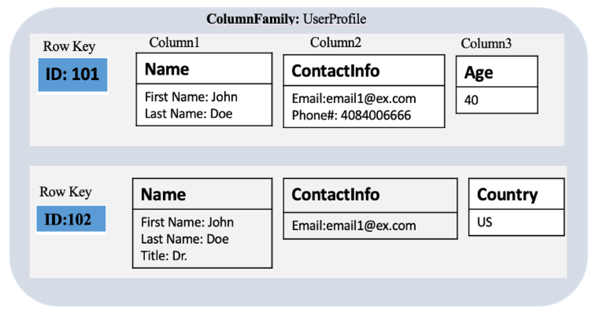
Wide-column — A wide column data store is a type of NoSQL database that stores data in columns rather than rows, making it highly scalable and flexible. In a wide column data store, data is organized into column families, which are groups of columns that share the same attributes. Each row in a wide column data store is identified by a unique row key, and the columns in that row are further divided into column names and values.
Unlike traditional relational databases, which have a fixed number of columns and data types, wide column data stores allow for a variable number of columns and support multiple data types. The most significant benefit of having column-oriented databases is that you can store large amounts of data within a single column. This feature allows you to reduce disk resources and the time it takes to retrieve information from it.
Evolution of the Database | New Developments
New developments
Today we have Cloud databases and self-driving databases that are creating a new ground when it comes to how data is collected, stored, managed, and utilized.
“ The autonomous database uses machine _ _ learning _ to _ automatically _ _ upgrade , patch _ and _ tune _ itself while _ running . Security updates are automated with no downtime required. Machine learning is used to make sure the database consumes less compute and storage thanks to automatic compression of data. The result is a faster, more reliable and cheaper database than the traditional database. “
Cloud databases: same database types as before, but now in the cloud (Amazon RDS, Azure Databases. Both relational and noSQL.
Self-driving database background info: https://markvanrijmenam.medium.com/the-database-of-tomorrow-the-self-driving-autonomous-database-6e51d45778f6
“The autonomous database uses machine learning to automatically upgrade, patch and tune itself while running. Security updates are automated with no downtime required. Machine learning is used to make sure the database consumes less compute and storage thanks to automatic compression of data. The result is a faster, more reliable and cheaper database than the traditional database.”
Explosion of Data
History: Societies were more successful if they were able to store and use data
1970 - 2000: Data grows exponentially, new possibilities to store and search data on mainframes and later in Relational Databases
2000 - Now: Big Data with scalable solutions for storage, processing and streaming
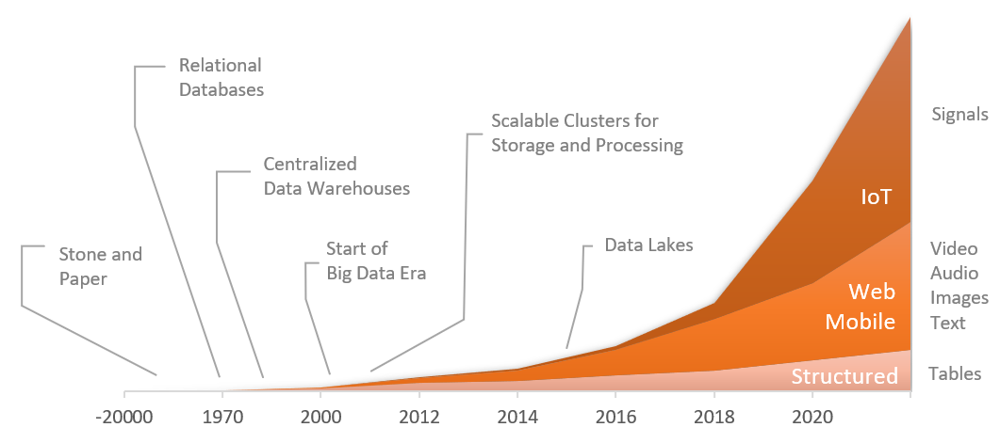
Pre-databases from 20000 years ago Successful societies were able to store and use data Couldn’t handle growth in physical storage Example: tribespeople (18000 BCE) mark notches into sticks or bones, to keep track of trading activity Example: The abacus (C 2400 BCE) The first dedicated device constructed specifically for performing calculations - comes into use in Babylon Example: The Library of Alexandria (300 BC - 48 AD) The largest collection of data in the ancient world, housing up to perhaps half a million scrolls and covering everything we had learned so far
Databases from 1970s Data grows exponential, new possibilities to store data on mainframes and in databases Example: OLTP, OLAP, RDBMS
Big Data from 2000s Scalable solutions for storage and processing
Data Lakes: storage for maintaining structured and unstructured data
The Rise of Big Data
From 2000 to 2012 the landscape changed towards Big Data, triggered by exponentially growing data.
Web, Social & Mobile use:
Google started indexing the web
Yahoo, Amazon and eBay started analyzing click rates
Mobile GPS data applications
Facebook connected user profiles into a graph structure
Netflix network traffic usage and recommendation engine
This required not-yet invented approaches for platforms and tools to order and analyze these new data scenarios .

Early 2000s - New Data scenarios occurred by increased web/mobile use. Large companies had to find new approaches and storage solutions to deal with these new data types in order to analyze them effectively - techniques that arrived to analyze data in a decentralized way: MapReduce, Hadoop and BigQuery
2012 - Hadoop 1.0 became a mature solution
More recently: - IoT scenarios contributed to new BigData scenarios with sensor-based internet-enabled devices - Self-driving cars, like from Tesla, analyze real-time video-capturing of the road/traffic
Image is a printscreen of a google search on 2021-05-04 for: how large is google’s page index
Big Data Landscape 2012

The state of Big Data is everchanging and growing over time. The following sheets illustrate the growth of the Big Data Landscape
Noticeable: The three top cloud providers (AWS, Azure, GCP) become stronger and more inclusive; more mature and more complete in their services Hadoop peaked after 2012, but is struggling now to keep up; because there are better alternatives for distributed analytics that can seperate the scaling of storage from the scaling of computation Since 2012, a flood of new platforms, tools and components have arisen based on the removal of those restrictions. Some came quickly and disappeared just as quickly, some grew and matured steadily. Between 2012 and 2018, the key players in the market changed almost every year. Since 2018, a stabilization has been underway and the large Clouds have reached the point where they can offer a stable and mature landscape that makes traditional value of data (SQL, DWH) and innovation and flexibility (Big Data, AI / ML) available to everyone These overviews depict a fast growing and ever changing and innovating landscape of tools, platforms and technologies!
Big Data Landscape per year: 2012 https://mattturck.com/a-chart-of-the-big-data-ecosystem-take-2/ 2014 https://mattturck.com/the-state-of-big-data-in-2014-a-chart/ 2016 https://mattturck.com/big-data-landscape/ 2017 https://mattturck.com/bigdata2017/ 2018 https://mattturck.com/bigdata2018/ 2019 https://mattturck.com/data2019/ 2020 https://mattturck.com/data2020/
Big Data Landscape 2016

The state of Big Data is everchanging and growing over time. The following sheets illustrate the growth of the Big Data Landscape
Noticeable: the three top cloud providers (AWS, Azure, GCP) become stronger and more inclusive; more mature and more complete in their services Hadoop peaked after 2012, but is struggling now to keep up; because there are better alternatives for distributed analytics that can seperate the scaling of storage from the scaling of computation Since 2012, a flood of new platforms, tools and components have arisen based on the removal of those restrictions. Some came quickly and disappeared just as quickly, some grew and matured steadily. Between 2012 and 2018, the key players in the market changed almost every year. Since 2018, a stabilization has been underway and the large Clouds have reached the point where they can offer a stable and mature landscape that makes traditional value of data (SQL, DWH) and innovation and flexibility (Big Data, AI / ML) available to everyone These overviews depict a fast growing and ever changing and innovating landscape of tools, platforms and technologies!
Big Data Landscape per year: 2012 https://mattturck.com/a-chart-of-the-big-data-ecosystem-take-2/ 2014 https://mattturck.com/the-state-of-big-data-in-2014-a-chart/ 2016 https://mattturck.com/big-data-landscape/ 2017 https://mattturck.com/bigdata2017/ 2018 https://mattturck.com/bigdata2018/ 2019 https://mattturck.com/data2019/ 2020 https://mattturck.com/data2020/
Big Data Landscape 2020

The state of Big Data is everchanging and growing over time. The following sheets illustrate the growth of the Big Data Landscape
Noticeable: the three top cloud providers (AWS, Azure, GCP) become stronger and more inclusive; more mature and more complete in their services Hadoop peaked after 2012, but is struggling now to keep up; because there are better alternatives for distributed analytics that can seperate the scaling of storage from the scaling of computation Since 2012, a flood of new platforms, tools and components have arisen based on the removal of those restrictions. Some came quickly and disappeared just as quickly, some grew and matured steadily. Between 2012 and 2018, the key players in the market changed almost every year. Since 2018, a stabilization has been underway and the large Clouds have reached the point where they can offer a stable and mature landscape that makes traditional value of data (SQL, DWH) and innovation and flexibility (Big Data, AI / ML) available to everyone These overviews depict a fast growing and ever changing and innovating landscape of tools, platforms and technologies!
Big Data Landscape per year: 2012 https://mattturck.com/a-chart-of-the-big-data-ecosystem-take-2/ 2014 https://mattturck.com/the-state-of-big-data-in-2014-a-chart/ 2016 https://mattturck.com/big-data-landscape/ 2017 https://mattturck.com/bigdata2017/ 2018 https://mattturck.com/bigdata2018/ 2019 https://mattturck.com/data2019/ 2020 https://mattturck.com/data2020/
What is Big Data?
What kind of data does Big Data imply?
The term implies data of an indeterminate—and steadily increasing—size as well as from an indeterminate number of sources, including data generated by employees, customers, partners, machines, logs, databases, security cameras, mobile devices, social media, and more.
Definition: ‘Big data refers to the 21st-century phenomenon of exponential growth of business data, and the challenges that come with it, including holistic collection, storage, management, and analysis of all the data that a business owns or uses.’
Source: https://www.informatica.com/services-and-training/glossary-of-terms/big-data-definition.html
Scalability: computation and storage scale linearly Flexibility: no fixed data formats needed Limitless: no predefined limits on storage and computation Coping with uncertainty: changes in data formats are supported without issues
5 V’s of Big Data - 1/3
Big Data is often explained with 3 or more parameters. Big Data Tech is aimed at handling these V’s.
5 V’s:
Volume: the scale of data
Velocity: the speed of data
Variety: the diversity of data
Veracity: the accuracy of data
Value: insights gained from data
Along with these V’s there are some other issues as performance, networking, pre-processing- and analysis techniques.
Terabytes
Records/Arch
Tables, Files
Distributed
Batch
Real/near-time
Processes
Streams
5 Vs of Big Data
Statistical
Events
Correlations
Hypothetical
Structured
Unstructured
Multi-factor
Probabilistic
Linked
Dynamic
Trustworthiness
Authenticity
Origin, Reputation
Availability
Accountability
Image: https://www.researchgate.net/figure/5Vs-of-big-data-10_fig1_325103690
5 V’s: started with Volume, Velocity and Variety, later also Value and Veracity Volume Refers to the size of the data sets that need to be analyzed and processed. Example: All credit card transactions on a day within Europe. Velocity Refers to the speed with which data is generated. Velocity data flows in from sources like machines, networks, social media, mobile phones etc.. Example: Twitter messages or Facebook posts. Variety Big Data comes from a great variety of sources and generally is one out of three types: structured, semi-structured and unstructured data. Example: CCTV audio and video files that are generated at various locations in a city. Veracity Refers to the quality of the data that is being analyzed. Example: Data from a medical experiment or trial. Value Refers to the value of the insights gained from data. The bulk of Data having no Value is of no good to the company, unless you turn it into something useful. Example: turn web-clicks into useful info to improve your webshop and optimize profit Is this the most important of all Vs??
Data with high volume, high velocity and high variety must be processed with advanced tools (analytics and algorithms) to reveal meaningful information.
5 V’s of Big Data - 2/3
Volume
Refers to the size of the data sets that need to be analysed and processed.
Example: All credit card transactions on a day within Europe.
Velocity
Refers to the speedwith which data is generated. Velocity data flows in from sources like machines, networks, social media, mobile phones etc.
Example: Instagram stories or Facebook posts.
Variety
Big Data comes from a great variety of sourcesand generally is one out of three types:structured, semi-structured and unstructured data.
Example: CCTV audio and video files that are generated at various locations in a city.
5 V’s of Big Data - 3/3
Veracity
Refers to the quality of the data that is being analysed.
Example: Data from a medical experiment or trial.
Value
Refers to the value of the insights gained from data. The bulk of Data having no Value is of no good to the company, unless you turn it into something useful.
Example: turn web-clicks into useful information to improve your e-shop and optimize profit

Big Data is also…..
Scalable with computation and storage, by running parallel jobs on distributed systems
Flexible, so potentially any data schema fits
Limitless, it (almost) doesn’t have limitations
Uncertain, unreliable and changeable
Not better than structured data, it is just an alternative for other scenarios
Stored in a Data Lake, which can also become a Data Swamp
About how you use the data. It’s actually not about the size of your data. Data size is always relative.
Affordable compared to on- prem _ solutions_
Horizontally scalable instead of forklift upgrades
forklift upgrades=vertical scalability
In modern terms, a forklift upgrade usually refers to a software change that requires extensive hardware updates or a hardware update that requires all new software. Forklift upgrades are most common in organizations with many legacy systems that make new implementations trickier as the surrounding systems age.
A forklift is a powered industrial truck used to lift and move materials over short distances
Flexibility:
A traditional database is based on a fixed schema that is static in nature. Big data uses a dynamic schema that can include structured as well as unstructured data. The data is stored in a raw form and the schema is applied only when accessing it. For big data analytics, datasets from diverse sources are appended, then functions such as storing, cleansing, distributing, indexing, transforming, searching, accessing, analyzing, and visualizing are performed.
Distributed architecture:
Big data uses a distributed architecture. Computation is distributed among several computers in a network. The use of commodity hardware, open-source software, and cloud storage makes big data storage even more economical. Once data quality checks and data normalization are conducted, the data is modeled so that it can be stored in a data warehouse.
Image: https://www.stone-ba.nl/nieuws/big-data-revolutie/
Cloud Solutions for Big Data
Big Data solutions are __ __ Cloud-focused :
Cloud is the logical decision for Big Data solutions. On- Prem _ just for business cases with heavy security and privacy_
All services within one Cloud provider : Traditional Data solutions and Big Data solutions are not separate worlds __ __ anymore
Cloud platforms are mature and Cloud services are stable and becoming more uniform
The cloud logo’s represent the Cloud market share: https://www.statista.com/chart/18819/worldwide-market-share-of-leading-cloud-infrastructure-service-providers/
Data Lake
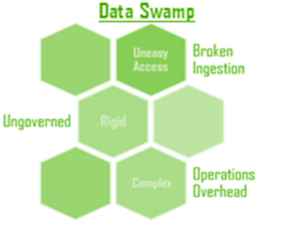
Scalable and no limitations, but at the same time do not just throw data into a big pile.
Data Lake or Data Swamp?
Just because you can save and edit everything doesn’t mean you have to
Data Lakes often become data swamps
Structure and information are there, why not use it?
Why keep things that have no value?
Or just keep everything?
Saving and processing data is not a capability!
Everything is possible (cloud and big data) and affordable too, but should you do it all?
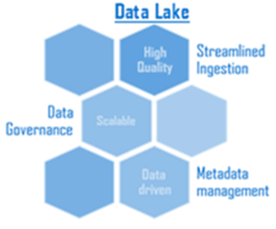
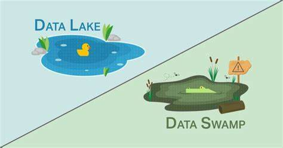
Discuss what data you should save when there are no limits privacy issues? Does data become obsolete? What are mainenance costs of data (keeping meta info up-to-date)
Saving and processing data is not a capability! You need a business case to create value
Image: https://sbhoracle.wordpress.com/2019/07/13/thinking-to-setup-a-data-lake-for-your-org-lets-read-this/
Agenda
Introduction
DBMS, Big Data, Cloud solutions
Data Analytics
Data Management and Data Governance
Computer programming
Business Intelligence & Visualization of Data
Statistics & Probability
Machine Learning (ML)
Artificial Intelligence (AI) __ __

What is Data Analytics?
Data analytics draws from a range of disciplines — including computer __ __ programming, mathematics, and statistics — to perform analysis on data in an effort to describe, predict, and improve performance.
To ensure robust analysis, data analytics teams leverage a range of data management techniques, including data mining, data cleansing, data transformation and data modeling.
Source: https://www.cio.com/article/3606151/what-is-data-analytics-analyzing-and-managing-data-for-decisions.html
Definition: ‘Data analytics is a discipline focused on extracting insights from data. It comprises the processes, tools and techniques of data analysis and management, including the collection, organization, and storage of data.’
4 Types of data analytics Descriptive analytics: What has happened and what is happening right now? Descriptive analytics uses historical and current data from multiple sources to describe the present state by identifying trends and patterns. In business analytics, this is the purview of business intelligence (BI).
Diagnostic analytics: Why is it happening? Diagnostic analytics uses data (often generated via descriptive analytics) to discover the factors or reasons for past performance.
Predictive analytics: What is likely to happen in the future? Predictive analytics applies techniques such as statistical modeling, forecasting, and machine learning to the output of descriptive and diagnostic analytics to make predictions about future outcomes. Predictive analytics is often considered a type of “advanced analytics,” and frequently depends on machine learning and/or deep learning.
Prescriptive analytics: What do we need to do? Prescriptive analytics is a type of advanced analytics that involves the application of testing and other techniques to recommend specific solutions that will deliver desired outcomes. In business, predictive analytics uses machine learning, business rules, and algorithms.
Data Analytics | Real Life Examples
| Netflix |
By analyzing data the company has successfully managed to grow, be receptive of what viewers want and to produce widely acclaimed hits |
| Google |
Utilised people analytics to create a better workforce |
| Coca-Cola |
Leverages the power of image recognition technology and data analytics to specifically target users based on photos user share socially and create personalized ads |
| DDS Bank |
Harnesses AI and analytics to provide customers with hyper-personalized insights and recommendations in order make better financial decisions |
| UBER |
Uses analytics to provide faster and more efficient ride with data |
Next to DDS Bank, BBVA (bank) is one of the front runners in data analytics
Data Analytics | Benefits
Data Analytics enables organizations to optimize performances to improve on company goals
The ultimate company goal is to make a profit - divided into subgoals like growing revenue and reducing costs
Companies that make use of Data Analytics have a higher chance to succeed/survive
Practical Data Analytics benefits:
Decisions or decision support that results in better outcomes
Finding patterns and trends that otherwise wouldn’t be identified
Able to make predictions and recommendations that improve the companies’ current performance
Higher quality and a more effective presentation of derived information
Types of Data Analytics - 1/2
Descriptive
What happened?
Decision or Insight
Diagnostic
Why did it happen?
Predictive
Based on what we know, What will happen?
Decision Support
Prescriptive
Now that I know, what do I do?
Decision Automation
Adapted from Gartner Report July 2015
Image: https://www.healthcatalyst.com/closed-loop-analytics-method-healthcare-data-insights
Types of data analytics There are four types of analytics: Descriptive analytics: What has happened and what is happening right now? Descriptive analytics uses historical and current data from multiple sources to describe the present state by identifying trends and patterns. In business analytics, this is the purview of business intelligence (BI). Diagnostic analytics: Why is it happening? Diagnostic analytics uses data (often generated via descriptive analytics) to discover the factors or reasons for past performance. Predictive analytics: What is likely to happen in the future? Predictive analytics applies techniques such as statistical modeling, forecasting, and machine learning to the output of descriptive and diagnostic analytics to make predictions about future outcomes. Predictive analytics is often considered a type of “advanced analytics,” and frequently depends on machine learning and/or deep learning. Prescriptive analytics: What do we need to do? Prescriptive analytics is a type of advanced analytics that involves the application of testing and other techniques to recommend specific solutions that will deliver desired outcomes. In business, predictive analytics uses machine learning, business rules, and algorithms.
Types of Data Analytics - 2/2
There are four types of analytics:
Descriptive analytics : What has happened and what is happening right now? Descriptive analytics uses historical and current data from multiple sources to describe the present state by identifying trends and patterns. In business analytics, this is the purview of Business Intelligence (BI)
Diagnostic analytics : Why is it happening? Diagnostic analytics uses data (often generated via descriptive analytics) to discover the factors or reasons for past performance.
Predictive analytics : What is likely to happen in the future? Predictive analytics applies techniques such as statistical modeling, forecasting, and machine learning to the output of descriptive and diagnostic analytics to make predictions about future outcomes. Predictive analytics is often considered a type of “advanced analytics,” and frequently depends on machine learning and/or deep learning.
Prescriptive analytics : What do we need to do? Prescriptive analytics is a type of advanced analytics that involves the application of testing and other techniques to recommend specific solutions that will deliver desired outcomes. In business, predictive analytics uses machine learning, business rules, and algorithms.
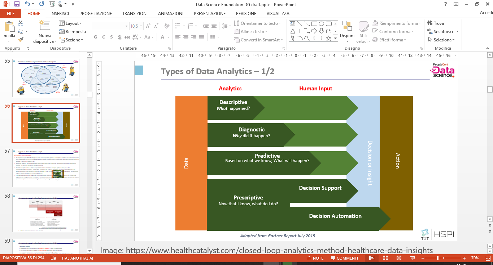
Purview = scope
Image: https://www.healthcatalyst.com/closed-loop-analytics-method-healthcare-data-insights
Types of data analytics There are four types of analytics: Descriptive analytics: What has happened and what is happening right now? Descriptive analytics uses historical and current data from multiple sources to describe the present state by identifying trends and patterns. In business analytics, this is the purview of business intelligence (BI). Diagnostic analytics: Why is it happening? Diagnostic analytics uses data (often generated via descriptive analytics) to discover the factors or reasons for past performance. Predictive analytics: What is likely to happen in the future? Predictive analytics applies techniques such as statistical modeling, forecasting, and machine learning to the output of descriptive and diagnostic analytics to make predictions about future outcomes. Predictive analytics is often considered a type of “advanced analytics,” and frequently depends on machine learning and/or deep learning. Prescriptive analytics: What do we need to do? Prescriptive analytics is a type of advanced analytics that involves the application of testing and other techniques to recommend specific solutions that will deliver desired outcomes. In business, predictive analytics uses machine learning, business rules, and algorithms.
Quantitative vs Qualitative Data Analytics
NOIR:
Nominal scale: A scale used to label variables that have no quantitative values.
Ordinal scale: A scale used to label variables that have naturally occurring orders, but no quantifiable difference between values.
Interval scale: A scale used to label variables that have a natural order and a quantifiable difference between values, but no “true zero” value.
Ratio scale: A scale used to label variables that have a natural order, a quantifiable difference between values, and a “true zero” value. E.g. zero degrees Celsius is still a temperature, 0 metres is nothing
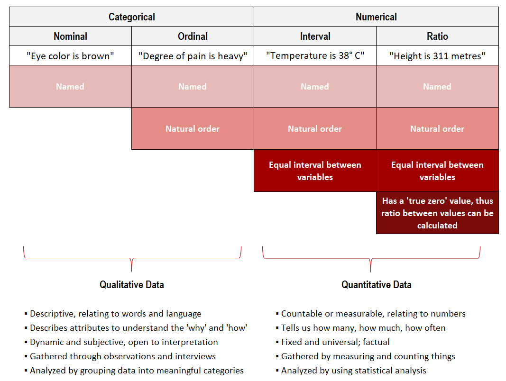
NOIR: measurement scales Nominal scale: A scale used to label variables that have no quantitative values. Ordinal scale: A scale used to label variables that have naturally occurring orders, but no quantifiable difference between values. Interval scale: A scale used to label variables that have a natural order and a quantifiable difference between values, but no “true zero” value. Ratio scale: A scale used to label variables that have a natural order, a quantifiable difference between values, and a “true zero” value. E.g. zero degrees Celsius is still a temperature, 0 metres is nothing
Image based on: https://www.statology.org/levels-of-measurement-nominal-ordinal-interval-and-ratio/ https://careerfoundry.com/en/blog/data-analytics/difference-between-quantitative-and-qualitative-data/
Agenda
Introduction
DBMS, Big Data, Cloud solutions
Data Analytics
Data Management and Data Governance
Computer programming
Business Intelligence & Visualization of Data
Statistics & Probability
Machine Learning (ML)
Artificial Intelligence (AI) __ __

What is Data Management? - (1/2)
Having data and using it means it needs to be managed.
The Data Management Body of Knowledge (DMBOK) model defines how to manage data in a professional organisation.
DAMA-DMBOK represents data management in the form of 11 Knowledge Areas, represented on the famous DAMA Wheel. At the heart of data management is Data Governance.

Source: book “DAMA-DMBOK: Data Management Body of Knowledge”
What is Data Governance?

Data governance is a system for defining
who _ within an organization has _ authority _ and _ control _ over data assets _
how _ those data assets may be _ used .
It encompasses the people , processes , and technologies _ _ required _ to _ manage _ and _ protect data assets .
Data governance is a system for defining who within an organization has authority and control over data assets and how those data assets may be used. It encompasses the people, processes, and technologies required to manage and protect data assets.
Source: https://www.imperva.com/learn/data-security/data-governance/
Goals of Data Governance
Define, approve and communicate data strategies, policies, standards, architecture and metrics (KPIs)
Follow and enforce compliance with law, policies, standards, architecture and procedures
Sponsor, follow and control delivery of data management projects and services
Manage and solve data related issues
Understand and advocate importance and value of data sets
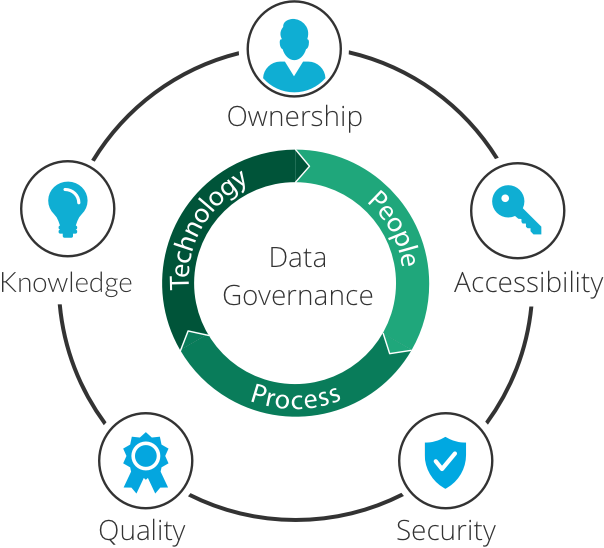
Data stewardship is a functional role in data management and governance, with responsibility for ensuring that data policies and standards turn into practice within the steward’s domain. Data stewards assist the enterprise in leveraging domain data assets to full capacity.
Data quality is a measure of the condition of data based on factors such as accuracy, completeness, consistency, reliability and whether it’s up to date. Measuring data quality levels can help organizations identify data errors that need to be resolved and assess whether the data in their IT systems is fit to serve its intended purpose.
Master data management is a discipline in which business and IT work together to ensure the uniformity, accuracy, stewardship, semantic consistency and accountability of the enterprise’s official shared master data assets
GDPR is the biggest data privacy use case in Data Governance of recent years
https://www.dnb.com/perspectives/master-data/6-key-responsibilities-of-data-stewards.html https://searchdatamanagement.techtarget.com/definition/data-quality https://en.wikipedia.org/wiki/Master_data_management
GDPR - what is?
What is GDPR?
“ Regulation on the protection of natural persons with regard to the processing of personal data and on the free movement of such data, and repealing Directive 95/46/EC (General Data Protection Regulation) “
The General Data Protection Regulation is the toughest privacy and security law in the world replacing national data protection laws of all EU member states.
Though it was drafted and passed by the European Union (EU), it also has international reach - applying to any organization that processes data of EU data subjects.
The regulation was put into effect on May 25, 2018. Fines for non-compliance will increase substantially up to a maximum fine of € 20 million or 4% of global annual sales, whichever is higher

Toughest = pr “dòuest”, la più robusta
GDPR - why?
Why GDPR?
No single set of rules in EU
Uncontrolled collection and storage of personal data
Inability to withdraw from direct marketing
No control over provided consent
Lack of procedures for data accuracy
GDPR has fundamentally changed the way companies must manage personal data
GDPR IS ABOUT GIVING CONTROL OVER PERSONAL DATA BACK TO PEOPLE
GDPR - personal data
Personal data
Article 4(1) - “Any information relating to an identified or identifiable natural person (”data subject”); an identifiable person is one who can be identified, directly or indirectly, in particular by reference to an identifier such as a name, an identification number, location data, online identifier or to one or more factors specific to the physical, physiological, genetic, mental, economic, cultural or social identity of that person.”
Examples:
Name
Age
Address
IP address
GDPR - sensitive data
SENSITIVE Personal data
Article 9(1) __ - __ “Sensitive Personal Data” are personal data, revealing racial or ethnic origin, political opinions, religious or philosophical beliefs, trade-union membership; DATA CONCERNING HEALTH (Art.4(15)) or sex life and sexual orientation; GENETIC __ __ DATA (Art.4(13)) or BIOMETRIC DATA __ __ (Art.4(14)). Data relating to criminal offences and convictions are addressed separately (as criminal law lies outside the EU’s legislative competence).
Examples:
Religion
Political sympathies
Race
DNA data
History of illnesses
GDPR Key Principles
DATA PROTECTION OFFICER
PRIVACY BY DESIGN
PURPOSE OF DATA COLLECTION
DATA MINIMIZATION
RIGHT TO BE FORGOTTEN
IP ADDRESS IS PERSONAL DATA
CONSENT ON DATA COLLECTION AND USAGE
DATA PORTABILITY
FINES FOR NON-COMPLIANCE INCREASE
72 HOURS DATA BREACH REPORTING PERIOD
GDPR | Data Protection Officer
DATA PROTECTION OFFICER
PRIVACY BY DESIGN
Data controllers are defined as organizations who acquire EU residents’ data
Data processors identified as those that manage, modify, store or analyze the data collected on behalf of the controllers
PURPOSE OF DATA COLLECTION
DATA MINIMIZATION
RIGHT TO BE FORGOTTEN
IP ADDRESS IS PERSONAL DATA
DPO
To inform and advise the controller or the processor and the employees who are processing personal data of their obligations pursuant to this Regulation;
To monitor compliance with this Regulation, including the assignment of responsibilities, awareness- raising and training of staff involved in the processing operations, and the related audits;
To provide advice where requested as regards the data protection impact assessment and monitor its performance pursuant to Article 35;
To cooperate with the supervisory authority (the ICO in the UK);
To act as the contact point for the supervisory authority on issues related to the processing of personal data
CONSENT ON DATA COLLECTION AND USAGE
DATA PORTABILITY
FINES FOR NON-COMPLIANCE INCREASE
72 HOURS DATA BREACH REPORTING PERIOD
Le principali figure protagoniste del trattamento dei dati personali, previste dal nuovo Regolamento UE 2016/679 o GDPR (General Data Protection Regulation), sono il Titolare de trattamento (o “Data Controller”) e il Responsabile del trattamento (o “Data Processor”).
Per fare un esempio pratico si pensi alla situazione in cui un’azienda (ossia il titolare del trattamento) affidi la gestione dell’invio di email marketing con i dati dei suoi clienti (ossia gli interessati) ad un’altra azienda (ossia il responsabile del trattamento). A volte poi nello stesso processo possono essere coinvolti più soggetti che prendono il ruolo di responsabile del trattamento (ritornando all’esempio di prima, il caso in cui l’invio delle email marketing sia fatto con un software gestito da una software house esterna, la quale diventa in questo processo anche essa stessa un altro responsabile del trattamento. E così via…).
Per fare un esempio pratico si pensi alla situazione in cui un’azienda (ossia il titolare del trattamento) affidi la gestione dell’invio di email marketing con i dati dei suoi clienti (ossia gli interessati) ad un’altra azienda (ossia il responsabile del trattamento). A volte poi nello stesso processo possono essere coinvolti più soggetti che prendono il ruolo di responsabile del trattamento (ritornando all’esempio di prima, il caso in cui l’invio delle email marketing sia fatto con un software gestito da una software house esterna, la quale diventa in questo processo anche essa stessa un altro responsabile del trattamento. E così via…).
Agenda
Introduction
DBMS, Big Data, Cloud solutions
Data Analytics
Data Management and Data Governance
Computer programming
Business Intelligence & Visualization of Data
Statistics & Probability
Machine Learning (ML)
Artificial Intelligence (AI) __ __

Software
Computer hardware and software require each other, and neither can be realistically used on its own
Computer software , or simply software , is that part of a computer system that consists of encoded information or computer instructions
A collection of computer programs, libraries and related data are also referred to as software
Definition: Computer software, or simply software, is that part of a computer system that consists of encoded information or computer instructions Software is a collection of programs and data that tell a computer how to perform specific tasks. Software often includes associated software documentation.[1] This is in contrast to hardware, from which the system is built and which actually performs the work.
Computer Program
A computer executes the program’s instructions in a central processing unit (CPU)
A computer program is usually written by a computer programmer in a programming language
From the program in its human-readable form of source code, a compiler can derive machine code
Alternatively, a computer program may be executed with the aid of an interpreter
Definition: A computer program is a collection of instructions that performs a specific task when executed by a computer
Introduction to Programming
Why do you need programming skills for DS, DA, AI and ML?
All of them require important computer power
In order to communicate with a computer, a language is needed
Depending on the goal, you might choose one _ _ programming language or another
Two languages dominate in these fields:
Python
- General-purpose programming language having multiple data science libraries along with rapid prototyping.
R
- Language for statistical analysis and visualization.
Python vs R for Data Science | At a Glance
| Objective |
Data analysis and statistics |
Deployment and production |
| Primary Users |
Scholar and R&D |
Programmers and developers |
| Flexibility |
Easy to use available libraries |
Easy to construct new models from scratch. I.e., matrix computation and optimization |
| Learning curve |
Difficult at the beginning |
Linear and smooth |
| __Popularity of Programming Language |
Percentage change__ |
4.04% in 20224.23% in 2018 |
| Integration |
Run locally |
Well-integrated with app |
| Task |
Easy to get primary results |
Good to deploy algorithm |
| Database size |
Handle huge sizes |
Handle huge sizes |
| IDE |
Rstudio |
Spyder, Jupyter Notebook |
| Important Packages and library |
tidyverse, ggplot2, caret, zoo |
pandas, scipy, scikit-learn, TensorFlow, pycaret |
| Disadvantages |
Steep learning curve and dependencies between libraries |
Not as many libraries as R |
| Advantages |
Graphs are made to talk. R makes it beautiful Large catalog for data analysis GitHub interface RMarkdown Shiny |
Jupyter __ notebook: Notebooks help to share data with colleagues__ Mathematical computation Deployment Code Readability Speed Function in Python |
Source: https://www.guru99.com/r-vs-python.html
Mention that for Python the most common editors now are: VSCode and PyCharm
Agenda
Introduction
DBMS, Big Data, Cloud solutions
Data Analytics
Data Management and Data Governance
Computer programming
Business Intelligence & Visualization of Data
Statistics & Probability
Machine Learning (ML)
Artificial Intelligence (AI) __ __

What is Data Warehouse?
A Data Warehouse (DWH) is a system that extracts from operational systems and external data sources within an organization for data analysis and reporting. Current and historical data is transformed towards a semantic __ __ data model. This central repository provides users decision support information, which is difficult to access or present in the traditional operational systems.
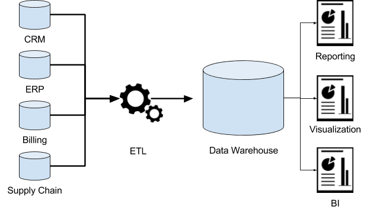
Components of a data warehouse are: Production data sources like CRM, ERP, Billing, flat files Data extraction and conversion (ETL or ELT). Extract-Transform-Load (ETL) data. But nowadays ELT is recommended, so all the untransformed data is saved first, which gives more flexibility later. Data warehouse database management system Data warehouse administration Business intelligence (BI) tools like Power BI, Qlik Sense, Tableau, Looker
Types of semantic data models are: Inmon, Kimball, DataVault They make use of terms like Facts, Dimensions, Start schema This can be realized by SQL
DWH related architectures: Data mart: subset of DWH for specific business area Data lake: a repository for raw (semi/un)structured data Data lakehouse: DWH and data lake combined
A brief history of Business Intelligence
The term Business Intelligence came to widespread use in the late 1990s. It is often credited to Howard Dresner _ _ (later a Gartner analyst ), who in 1989 used the term to describe “concepts and methods to improve business decision making by using fact-based support systems”
In 1865 Richard Millar Devens presented the phrase ‘Business Intelligence’ (BI) in the Cyclopaedia of Commercial and Business Anecdotes.
He was using it to describe how Sir Henry Furnese, a banker, profited from information by gathering and acting on it before his competition.
https://1-answer.com/a-brief-history-of-business-intelligence/
The term Business Intelligence came to widespread use in the late 1990s. It is often credited to Howard Dresner (later a Gartner analyst), who in 1989 used the term to describe “concepts and methods to improve business decision making by using fact-based support systems
In 1865 Richard Millar Devens presented the phrase ‘Business Intelligence’ (BI) in the Cyclopaedia of Commercial and Business Anecdotes. He was using it to describe how Sir Henry Furnese, a banker, profited from information by gathering and acting on it before his competition.
This is an anecdote that is symbolic for the purpose of BI https://en.wikipedia.org/wiki/Business_intelligence#History
The earliest known use of the term business intelligence is in Richard Millar Devens’ Cyclopædia of Commercial and Business Anecdotes (1865). Devens used the term to describe how the banker Sir Henry Furnese gained profit by receiving and acting upon information about his environment, prior to his competitors: Throughout Holland, Flanders, France, and Germany, he maintained a complete and perfect train of business intelligence. The news of the many battles fought was thus received first by him, and the fall of Namur added to his profits, owing to his early receipt of the news. — Devens, p. 210
About the illustration: Advantage was especially on getting (long-distance) information sooner than your competitor, so an important role for stagecoaches and postmen
What is Business Intelligence?
Business Intelligence (BI) turns data into actionable business insights.
BI is the continuous process by which organizations collect, register and analyze data in a targeted manner and apply the resulting information and knowledge in decision-making processes to improve the performance of the organization.
This requires:
Data Warehousing with Data Extraction and Data Modelling
BI tooling for Analytics and Presentation
Business and Technical acumen

Data Extraction and Data modelling - see previous DWH slide BI tooling - for analytics, dashboards and reports Business and technical acumen - understand the business and implement this knowledge
Business Intelligence Trends
Data governance - Better data management to ensure data quality, integrity, security
Self-service B I - More options to analyze and visualize data for the end-user
Real-time analytics - Live dashboards, no more waiting
Embedded BI - Better adoption when data analytics occur within a user’s natural workflow -> projects
SaaS BI - More flexibility and access to your data in the cloud, from any device
Data governance: Better data management to ensure data quality, integrity, security Self-service BI: More options to analyze and visualize data for the end-user Real-time analytics: Live dashboards, no more waiting Embedded BI: Better adoption when data analytics occur within a user’s natural workflow SaaS BI: More flexibility and access to your data in the cloud, from any device
What is Data Visualization?
In the world of Big Data, data visualization tools and technologies are essential to analyze massive amounts of information and make data-driven decisions.
Data visualization helps to tell stories by curating data into a form easier to understand, highlighting the trends and outliers.
Data visualization can also unlock the ability of less technical users to explore and interact with data
A good visualization tells a story , removing _ the _ noise _ from data and _ highlighting _ the _ useful _ information._

Outliers = anomalie Source: https://www.tableau.com/learn/articles/data-visualization
Definition: ‘Data visualization is the graphical representation of information and data. By using visual elements like charts, graphs, and maps, data visualization tools provide an accessible way to see and understand trends, outliers, and patterns in data.’
The Power of Visuals (1/4)
A picture _ tells more than a thousand words. A _ chart _ tells more than a million data points_
Human Vision
Humans are visual by Nature
90 percent of information transmitted to the brain is visual
65 percent of the population are visual learners, graphics are key to engaging employees
The human brain processes Visual data 60.000 times better than Textual data


Understand human eye perception and what human vision understands:
A picture tells more than a thousand words A chart tells more than a million data points
Facts from http://visualteachingalliance.com/: Fact: Approximately 65 percent of the population are visual learners. - Mind Tools, 1998 Fact: Although only 10 percent of secondary students are auditory learners, 80 percent of instruction is delivered orally. - University of Illinois Extension, 2009 Fact: The brain processes visual information 60,000 faster than text. - 3M Corporation, 2001 Fact: 90 percent of information that comes to the brain is visual. - Hyerle, 2000 Fact: 40 percent of all nerve fibers connected to the brain are linked to the retina. - Jensen, 1996 Fact: Visual aids in the classroom improve learning by up to 400 percent. - 3M Corporation, 2001 Fact: People can remember the content of 2500 pictures with over 90 percent accuracy 72 hours after looking at them for only 10 seconds. A year later participants had 63 percent recall of those same images. With traditional lecture format delivery, students only remember 10 percent of the material 72 hours later. - Crockett, 2010 Fact: A good infographic is worth a thousand words. Fact: Our eyes can register 36,000 visual messages per hour. - Jensen, 1996 Fact: It only takes about 1/4 second for the human brain to process and attach meaning to a symbol. By comparison, it takes us an average of 6 seconds to read 20-25 words.- Thorpe, S., Fize, D. & Marlot, C. (1996) Fact: Ideas presented graphically are easier to comprehend and remember than those presented as words. - Kliegl, R., Smith, J., Heckhausen, J. & Baltes, P.B. (1987) Fact: Visual Literacy is the ability to encode (create a visual language) & decode (understand a visual language). Fact: Students who are twice exceptional (2e) are often strong visual learners.
Image: https://blog.eikontechnology.com/solusi-meningkatkan-kinerja-bisnis-dengan-microsoft-excel-365/
The Power of Visuals (2/4)
Visual Deception - Escher
Deception = inganno
Escher was a master in visual deception
Link: https://www.art-madrid.com/en/post/visual-paradoxes-for-the-senses https://en.wikipedia.org/wiki/Relativity_(M._C._Escher)
The Power of Visuals (3/4)
Visual Deception - different feeling of interpretation

Assi y hanno una scala differente, e ciò porta a una diversa “percezione” della realtà
What’s wrong? same data, same axes different scale of axis different ‘feeling’ and interpretation
Link: https://heap.io/blog/data-stories/how-to-lie-with-data-visualization
The Power of Visuals (4/4)

Visual Deception - an upside down Y-axes with descending (instead of ascending) values to the top might for a moment give the wrong impression that the ‘Stand your ground law’ was positive in relation to gun deaths
Dopo che la Florida ha approvato la legittima difesa le morti AUMENTANO anzichè diminuire (come potrebbe sembrare perchè la curva scende)
A stand-your-ground law, sometimes called a “line in the sand” or “no duty to retreat” law, provides that people may use deadly force when they reasonably believe it to be necessary to defend against certain violent crimes (right of self-defense). Under such a law, people have no duty to retreat before using deadly force in self-defense, so long as they are in a place where they are lawfully present.
What’s wrong? How does it feel when you interpret an upside down Y-axes with descending (instead of ascending) values to the top This might for a moment give the wrong impression that the ‘Stand your ground law’ was positive in relation to gun deaths
Link: https://heap.io/blog/data-stories/how-to-lie-with-data-visualization
Savviness = saggezza
Know and understand the good and bad concepts of visualization
Perfection is achieved not when there is nothing more to add, but when there is nothing left to take away.
Customize a dashboard to information that is relevant for the user (e.g. role based access to information)
Image: https://medium.com/@sudharsanasai/declutter-your-chart-with-data-ink-ratio-6f6908727842
Know and understand the good and bad concepts of visualization
More why not to use Pie charts: https://www.perceptualedge.com/articles/visual_business_intelligence/save_the_pies_for_dessert.pdf
Extraneous elements, such as background grids and tick lines, should be removed or visible enough to serve their purpose but not detract from the relevant information.
Links: https://4.bp.blogspot.com/-olei-HQLMf8/Uh5Y66TUX7I/AAAAAAAAM9U/s3TMhXmteNA/s1600/468+Pie.png https://marketoonist.com/2019/11/kpi-overload.html https://www.fusioncharts.com/charts/gauges/gauge-with-trend
Know and understand the good and bad concepts of visualization
Choose the right chart type wrt your data
Image: https://education.microsoft.com/en-us/course/0a60eeb6/1
Agenda
Introduction
DBMS, Big Data, Cloud solutions
Data Analytics
Data Management and Data Governance
Computer programming
Business Intelligence & Visualization of Data
Statistics & Probability
Machine Learning (ML)
Artificial Intelligence (AI) __ __

Definition of Statistics
The word statistics was coined by Gottfried Achenwall (1719-1772) and was derived from the Latin state since historically it was used by governments while gathering demographic information like census or tax collecting.
Gottfried Achenwall __ __
Statistics , that is ” the science of collecting and analysing statistics” is defined by the Oxford dictionary as “a discipline that concerns the collection, organization, analysis, interpretation, and presentation of data.”
However, this term is also used as a synonym for data, for example, statistics of a basketball game (how may points were scored by each player,…)
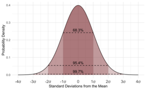
Populations and Samples
The primary objective __ of a statistical analysis is to infer __ characteristics __ of a __ group __ of data by __ analyzing __ the __ characteristics __ of a __ small __ __ sampling __ of the group.__
Population : In statistics, a population (also called a universe) is a set of similar items or events which is of interest for some question or experiment.
For small populations, we can obtain all values. However, populations are normally so large that obtaining all the measurements is unfeasible.
Sample is a set of individuals or objects collected or selected from a statistical population by a defined procedure.
To sample a population randomly requires that each member of the population has an equal and independent chance of being selected.
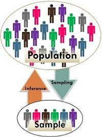
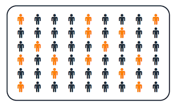
Difference Between Probability and Statistics
Probability starts with a model describing what events we think are going to occur, with what likelihoods.
For example, flipping a fair coin, the probability of heads on a given flip is 50%, and the probability of tails on a given flip is 50%. Probability is about prediction, thus, looking forward.
Statistics is the opposite, given only the data, try to guess what the rules are. Statistics is about looking backward.
In probability, we start with a model describing what events we think are going to occur, with what likelihoods. For example, flipping a fair coin, the probability of heads on a given flip is 50%, and the probability of tails on a given flip is 50%. Probability is about prediction, thus, looking forward.
Statistics is the opposite, given only the data, try to guess what the rules are. Statistics is about looking backward.
Probability Theory
Probability theory is the branch of mathematics concerned with probability, which measures how likely an event is to occur.
It was triggered by the desire to predict outcomes in the games of chance popular among the French nobility of the mid-seventeenth century such cards and dices.
Earlier work was done by writers such as Girolamo __ Cardano __ (1501-1576) and Galileo Galilei (1564-1642)
It was developed between two great French mathematicians, Blaise Pascal (1623-1662) and Pierre Fermat (1601-1665).
Basic Concepts in Probability (1/5)
Random experiment is an action for which all possible outcomes can be listed, but for which the actual outcome on any given trial of the experiment cannot be predicted with certainty.
- For example, a coin has two sides and when tossed will land with either the “head” side (H) up or the “tail” side (T) up, but not both. Or, a die has six sides and when thrown will land with either the 1, 2, 3, 4, 5, or 6 side up.
Sample space associated with a random experiment is the set of all possible outcomes (H or T with the coin; or 1, 2, 3, 4, 5, or 6 with the die ).
Probability of an outcome is a number p between 0 and 1 that measures the likelihood that this outcome will occur on a single trial. The value p = 0 corresponds to the outcome e being impossible and the value p = 1 corresponds to the outcome e being certain.
Set is a defined collection of items. For example, the number rolled is odd {1,3,5} or even {2,4,6}.
Event, a set of outcomes is an event . The probability of an event is the sum of the probabilities of the individual outcomes of which it is composed. It is denoted P(A).
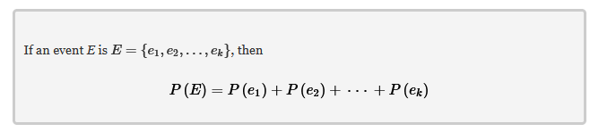
Basic Concepts in Probability (2/5)
The intersection of events __ __ A and B, denoted A ∩ B, is the collection of all outcomes that are elements of both of the sets A and B. It corresponds to combining descriptions of the two events using the word “and.”
If two events have no elements in common, they are said to be mutually exclusive, and the two sets are said to be disjoint. The set that is the intersection of disjoint sets contains no elements and is often called the empty __ __ set __ __ or the null set.
For example, the events “odd-numbered rolls” and “even-numbered rolls” are mutually exclusive and there are no elements common to both of them.
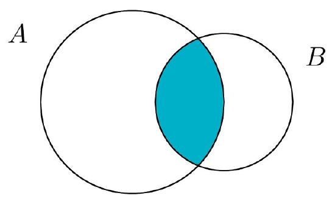
Basic Concepts in Probability (3/5)
The union of events __ __ A and B, denoted A ∪ B, is the collection of all outcomes that are elements of one or the other of the sets A and B, or of both _ of them._
It corresponds to combining descriptions of the two events using the word “or.”.
For example, The union of the events “odd numbered” and “rolls greater or equal than 2”
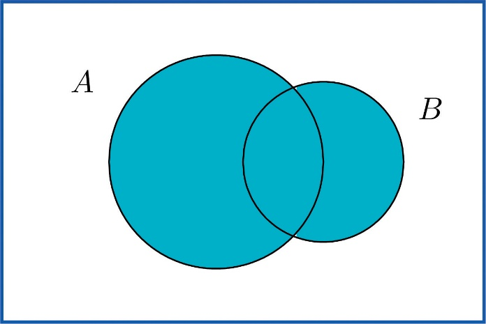
1 2 3 4 5 6
Basic Concepts in Probability (4/5)
Multiplying probabilities
- If two or more events intersect, the probability associated with the intersection is the product of the probabilities of the individual events. That is,
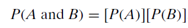
Example, the probability of a tossed coin landing heads is 0.5. If two coins are tossed, the probability of both __ coins landing heads is:__
P(H,H) = [P(H)][P(H)] = 0.5 * 0.5 = 0.25
Date due monete l’insieme completo degli eventi lancio è TT, TC, CT, CC, l’evento che ci interessa è TT quindi la sua probabilità P è 1/4 che è il prodotto di 1/2 * 1/2, che sono le probabilità che una moneta esca con Testa (head)
Basic Concepts in Probability (5/5)
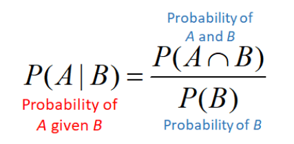
Conditional probabilities
- Conditional probability is the probability of one event with the stipulation that another event also occurs.

Teorema di Bayes Spade = pala, badile, quindi PICCHE
ATTENZIONE: NON è LA PROBABILITA CHE ESCA REGINA DI PICCHE, QUELLA VARREBBE 1/52 E LA PROB CHE QUANDO ESCA UNA CARTA DI PICCHE SIA ANCHE LA REGINA!!!!
Quindi nel nostro caso occorre intersecare la probabilità di avere una regina (ho 4 regine su 52 carte) con la probabilità che esca una carta picche, che è 13 su 52). Il tutto dividendo la probabilità di avere una carta di picche che è 13 su 52 ——————————————————————————————— Altro esempio probabilità che due dadi identici diano somma 6 con uno dei due dadi da cui esca 2
Se immaginiamo sia uscito 2, I casi possibili sono 11, cioè tutte le possibili coppie con 2
21, 22, 23, 24, 25, 26 12, 32, 42, 52, 62
I casi favorevoli (somma 6) sono solo 2, cioè 24 e 42
Quindi probabilità = 2/11
In un villaggio il 60% della popolazione è composto da donne, il 40% da uomini
Metà delle donne porta i pantaloni
Agenda
Introduction
DBMS, Big Data, Cloud solutions
Data Analytics
Data Management and Data Governance
Computer programming
Business Intelligence & Visualization of Data
Statistics & Probability
Machine Learning (ML)
Artificial Intelligence (AI) __ __
What is Machine Learning?
The primary aim is to allow the computers learn automatically without human intervention or assistance and adjust actions accordingly in order to enable better decisions at scale.
A Machine Learning model uses supervised or unsupervised learning
A Machine Learning model can be deployed into an existing production environment
A Machine Learning workflow can be automated by pipelines
Machine Learning
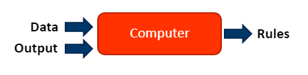
Definition: ‘Machine Learning (ML) provides systems the ability to automatically learn and improve from experience and/or from past cases, without being explicitly programmed. Machine learning focuses on the development of computer programs that can access data and use it to learn for themselves. However, if there is no past then no predictions can be made.’
Machine Learning vs Traditional Programming
Traditional programming differs significantly from machine learning. In traditional programming, a programmer codes all the rules in consultation with an expert in the industry for which software is being developed. Each rule is based on a logical foundation; the machine will execute an output following the logical statement. When the system grows complex, more rules need to be written. It can quickly become unsustainable to maintain.
Machine learning is supposed to overcome this issue. The machine learns how the input and output data are correlated and it writes a rule. The programmers do not need to write new rules each time there is new data. The algorithms adapt in response to new data and experiences to improve efficacy over time.
Machine Learning and Artificial Intelligence Systems
Machine Learning (ML) is a subset of Artificial Intelligence.
Artificial Intelligence
Ability to sense, reason, engage, and learn
Robotics & motion

Natural Language processing
Machine Learning
Planning & optimization
Ability to learn
Unsupervised learning
Voice
recognition
Knowledge
capture
Supervised learning
Reinforcement learning
Ability to reason
Regression
Decision Trees
etc.
Physical enablement
Platform
UX
APIs
Sensors
etc.
The Idea of Training and Learning from Data
There are several _ _ types _ of machine learning _ models , of which the most common ones are supervised _ and _ unsupervised _ learning._
Algorithm _ _ in machine learning is a procedure that is run on data to create a machine learning “model.”
For example , f(x) = ax _ + b, which is the general formula for linear regression._
Machine learning algorithms build a model based on sample data, known as _“_ training _ _ data”, in order to make predictions or decisions without being explicitly programmed to do so.
Model _ _ in machine learning is the output of a machine learning algorithm run on data.
For example , f(x) = 3x + 2.
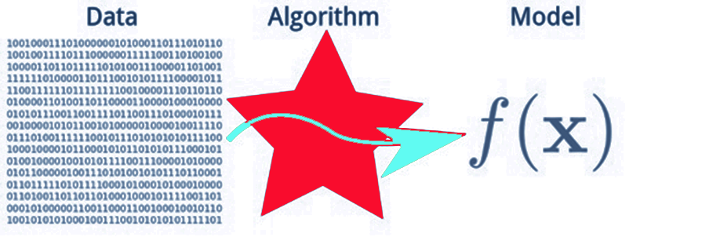
The Processes of Training, Validating and Testing (1/3)
Train/Test split
Keeping apart one portion of the dataset ( test set ) and training the model on the remaining portion ( train set ).
The model has never seen before the test set, hence it is a more reliable benchmark for evaluation purposes.
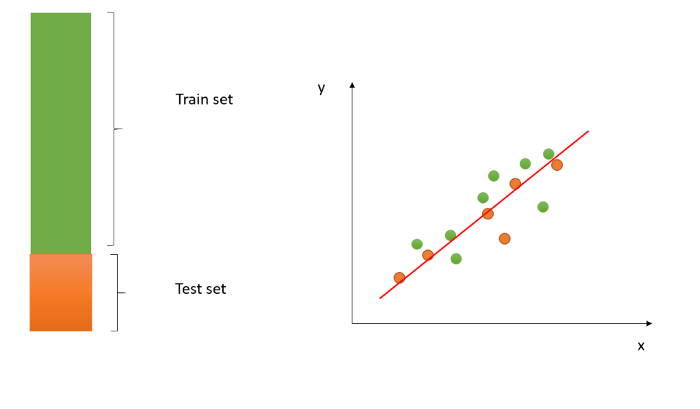

Keeping apart one portion of the dataset (test set) and training the model on the remaining portion (train set).
The model has never seen before the test set, hence it is a more reliable benchmark for evaluation purposes.
The Processes of Training, Validating and Testing (2/3)
Cross-validation
Train/Test split has one caveat, results depends on where the split is done.
If we had a different composition of train and test set, we would have a very different result.
Cross-validation splits our dataset into K-folds, then the model is trained on K-1 folds and tested on the remaining one, for K iterations.
So each time the model is trained and tested on a new composition of data.
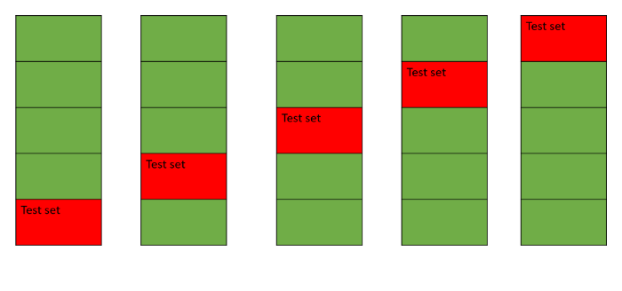

Train/Test split has one caveat, results depends on where the split is done. If we had a different composition of train and test set, we would have a very different result.
Cross-validation splits our dataset into K-folds, then the model is trained on K-1 folds and tested on the remaining one, for K iterations. So each time the model is trained and tested on a new composition of data.
The Processes of Training, Validating and Testing (3/3)
Train, validation and test set
With cross-validation, still the model have seen all the data at some point.
To fix it, a third set, called validation set, is introduced.
Basically, we first split data into train and test set.
Then, we keep apart the test set and further split the train set into train and validation sets.
By doing so, when applying cross-validation, we first evaluate the model over the K possible combinations.
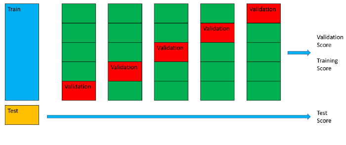
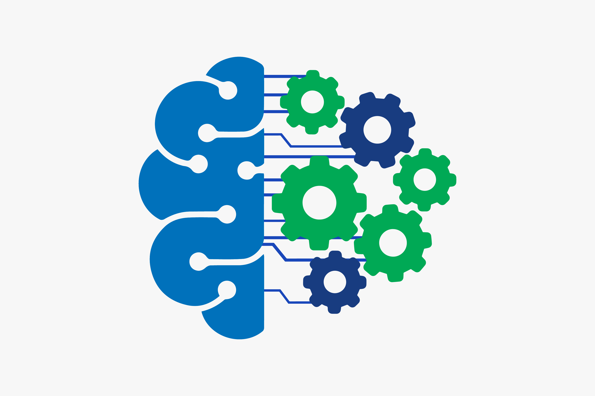
La parte azzurra viene poi divisa in train verde e validation rosso
Ultimo test è sul set giallo
Understand Various Methods of Learning (1/5)

Understand Various Methods of Learning (2/5)
Machine learning algorithms are often categorized as supervised or unsupervised.
Supervised __ machine learning algorithms __ apply _ _ what _ has been _ learned _ in the _ past to new data using labeled __ __ examples __ __ to predict future events.
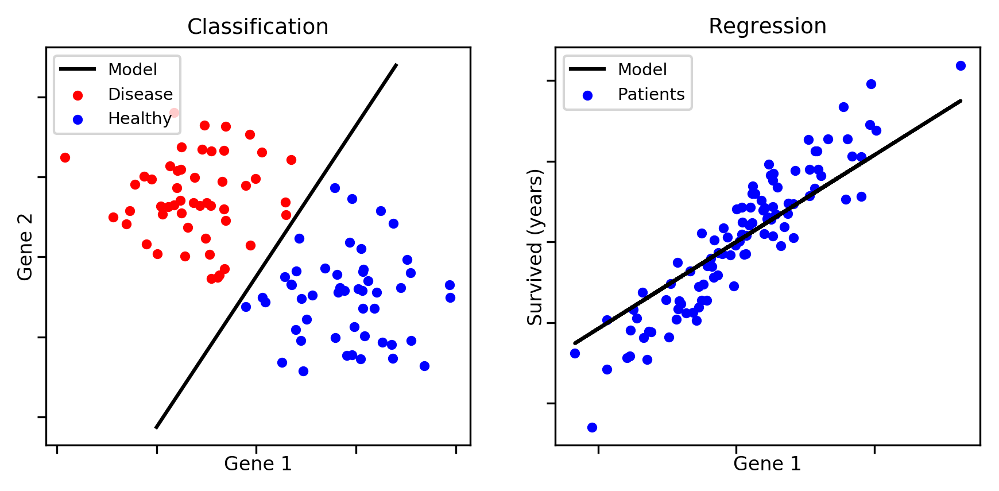

Supervised Learning | (3/5)
Classification
Classification is concerned with building models that separate __ __ data __ into __ distinct __ __ classes
These models are built FIRST by inputting a set of training data for which the classes __ are __ PRE-LABELLED __ in order for the algorithm to learn __
The model is THEN used by inputting a different dataset for which the classes are WITHHELD, allowing the model to predict their class membership based on what it has learned from the training set
Well-known classification schemes include decision __ __ trees and support vector machines
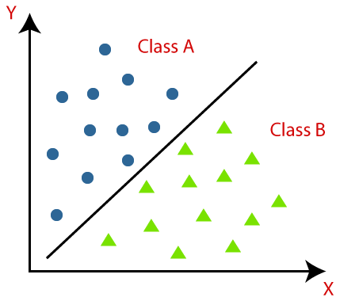
Witheld = nascosto In pratica funziona cosi Ti do in pasto un bel pò di dati labelled per cui vedi chi appartiene a categoria A e chi a B Ti do in pasto un mucchio di dati per I quali non è evidente a quale categoria appartengano e devi riconoscere l’appartenenza basandoti su ciò che hai appreso precedentemente
Supervised Learning | (4/5)
Regression
Regression _ _ methods focus on predicting __ a __ continuous __ __ outcome __ variable (y) __ based __ on the value of one or __ multiple __ __ predictor __ variables (x).__
The goal of regression model is to build a mathematical equation that defines y as a function of the x variables. Next, this equation can be used to predict the outcome (y) on the basis of new values of the predictor variables (x).
Linear regression is the most simple and popular technique for predicting a continuous variable. It assumes a linear relationship between the outcome and the predictor variables.
The linear regression equation can be written as y = a + b*x + e, where:
Well-known regression algorithms include th e linear L asso and Ridge regressions and the non-linear Regression Trees
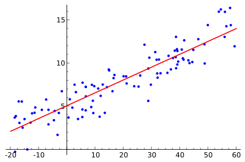

The acronym “LASSO” stands for Least Absolute Shrinkage and Selection Operator.
Understand Various Methods of Learning (5/5)
Reinforcement machine learning algorithms interact with their environment by producing actions and discovering errors or rewards.
Trial and error search and delayed reward are the most relevant characteristics of reinforcement learning.
Allows machines and software agents to automatically determine the ideal behavior within a specific context in order to maximize its performance.
Simple reward feedback is required for the agent to learn which action is best - a reinforcement signal.


Reinforcement Learning | Example
Using reinforcement learning, AlphaGo Zero was able to learn the game of Go from scratch.
It learned by playing against itself.
Alpha Go Zero was able to outperform the version of Alpha Go known as Master that has defeated world number one Ke __ __ Jie.
It only used black and white stones from the board as input features.
The agent is composed by a neural network.
AlphaGo Zero played against itself millions of times, and with time and its own creativity, it had managed to find these techniques used by the masters of Go.


AlphaGo è un software per il gioco del go sviluppato da Google DeepMind. È stato il primo software in grado di sconfiggere un maestro umano nel gioco senza handicap e su un goban di dimensioni standard
Agenda
Introduction
DBMS, Big Data, Cloud solutions
Data Analytics
Data Management and Data Governance
Computer programming
Business Intelligence & Visualization of Data
Statistics & Probability
Machine Learning (ML)
Artificial Intelligence (AI) __ __

What is Artificial Intelligence?
AI is concerned with getting computers to do tasks that would normally require human intelligence.
AI refers to a broad field of science encompassing not only computer science but also psychology, philosophy, linguistics and other areas.
Applications:
Machine learning
Computer Vision
Natural language processing (NLP)
Robotics & Motion
Planning and optimization
Knowledge capture

Definition: ‘Artificial Intelligence (AI) is the science and engineering of making intelligent machines, especially intelligent computer programs’ - Alan Turing
Artificial Intelligence (AI)

“AI is the science and engineering of making intelligent machines, especially intelligent computer programs.”
(Alan Turing)
AI: definition and types
Intelligence demonstrated by machines
According to the Computer Science view:
” Intelligent agents” perceiving their environment and taking actions to achieve a goal.
Narrow or Weak AI __ __ performs some traditional goals
- Reasoning, planning, learning, natural language processing, image recognition …
Artificial general intelligence (AGI), also called Strong AI :
Performs a full range of human abilities
Some predict it will be 2050 before we can achieve this
We are not sure if we will ever understand consciousness
Explain the definition of AI, the computational science view. It somehow misses the point of what emotions are. Explains that we are already good at narrow AI; engineers and scientists use this every day. Strong or artificial general intelligence is some way off; it will be able to perform the full range of human abilities, possibly exceed them, but it is a long way off. Academics believe we will achieve this but we just don’t know when, and certainly not any time soon.
Artificial intelligence and the rational agent - 1/2

Agent comes from the Latin “agere” - to do.
In AI we assume agents are rational and are expected to achieve the best outcome or best expected outcome if there is uncertainty. They also act ” autonomously “!
There are other approaches based on human behaviour or human thought but this approach is the most amenable to scientific development.
In, decision theory and artificial intelligence, a rational agent is an agent that has clear preferences, models uncertainty via expected values of variables or functions of variables, and always chooses to perform the action with the optimal expected outcome for itself from among all feasible actions.
Artificial intelligence and the rational agent - 2/2
Stuart Russell and Peter Norvig ’s book, Artificial Intelligence - A Modern Approach, 3rd edition, defines a rational agent
“For each possible percept sequence, a rational agent should _ select _ an action that is _ expected _ to _ maximize _ its performance measure, given the _ evidence _ _ provided _ by the _ percept _ sequence and _ whatever _ built in _ knowledge _ the agent has.”
We expect agents to be rational and this depends on four things :
The performance measure that defines the criterion of success
The agent’s prior knowledge of the environment
The actions that the agent can perform
The agent’s percept sequence to date

Behaved = educati This slide describes our learning agent as rational; this is made up of four things. Go through the Russell and Norvig explanation of a rational agent and ask delegates if they have examples of where they could apply this (simulations of traffic or aircraft perhaps).
Schematic of AI (the Computer Science view) - 1/2
External Task Environment
Percept
the collective term of all the agent’s perceptual inputs at any given time

Action
to manipulate the environment
- “Learn from experience, adapt, understand and handle abstract concepts , manipulate our environment”.
The term “Percept” is the collective term of all the agent’s perceptual inputs at any given time
Encyclopaedia Britannica IQ mental quality that consists of the abilities to learn from experience, adapt to new situations, understand and handle abstract concepts, and use knowledge to manipulate one’s environment
Describe the key components of the Schematic of Artificial Intelligence. Also make the link between the Britannica definition of human intelligence and this schematic.
Schematic of AI (the Computer Science view) - 2/2
External Task Environment

Percept
the collective term of all the agent’s perceptual inputs at any given time

Architecture
Percept obtained from sensors
Program delivers the agent functionality: mapping sensor precept to actuator actions
Action undertaken by actuators
Action
to manipulate the environment
- “Learn from experience, adapt, understand and handle abstract concepts , manipulate our environment”.
A program will run on a computing device, improving its performance through learning
These slides explain the main terms that let the learning agent manipulate and understand its environment and map its percept of the environment to actions on the environment.
Agent examples
| Central heating thermostat |
Temperature, heating cost |
Building, inhabitants, heating system |
Inhabitant display, boiler, power |
Temperature, keypad, phone, computer |
| Interactive sales chatbot |
Number of sales |
Customers, sale environment (internet, store, phone) |
Robot, display, speaker |
Keyboard, microphone, camera, kinesthetic sensors |
Go through each of these examples and ask for examples from the delegates.
Types of agent - 1/2
e.g. central heating overheats, program selects the action to switch off the power
The agent has a model of the world
can make up for a lack of sensor (virtual world that doesn’t need sensor data)
program now looks at the percept and updates its own internal world (state)
program can assess the possible actions and future states and uses reflex agent approach to determine what actions to take
e.g. underwater vehicle loses visual sensors (silt - not enough light), continues using 3D mapped geometrical model
- Agente riflesso semplice Gli agenti riflessi semplici prendono decisioni basandosi esclusivamente sull’input corrente, senza considerare i risultati passati o potenziali futuri. Reagiscono direttamente alla situazione corrente senza stato interno o memoria.
Esempio: un termostato che accende il riscaldamento quando la temperatura scende sotto una certa soglia, ma non tiene conto delle precedenti letture della temperatura o delle previsioni meteo a lungo termine - fig Bonaire Gas Heater Overheat Switch 120 Deg. 5431606SP
Caratteristiche dell’agente riflesso semplice: Reattivo: reagisce direttamente agli input sensoriali attuali senza considerare le esperienze passate o le conseguenze future. Ambito limitato: in grado di gestire compiti o ambienti semplici con relazioni causa-effetto chiare. Risposta rapida: prende decisioni rapide basandosi esclusivamente sulla situazione attuale, consentendo una rapida esecuzione delle azioni. Mancanza di adattabilità: incapacità di apprendere o adattarsi in base al feedback, il che lo rende meno adatto ad ambienti dinamici o in continua evoluzione.
- Agenti riflessi basati su modelli Gli agenti riflessi basati su modelli migliorano gli agenti riflessi semplici incorporando rappresentazioni interne dell’ambiente. Questi modelli consentono agli agenti di prevedere i risultati delle loro azioni e prendere decisioni più informate. Mantenendo stati interni che riflettono aspetti inosservati dell’ambiente e utilizzando percezioni passate, questi agenti sviluppano una comprensione completa del mondo. Questo approccio li equipaggia per navigare efficacemente in ambienti complessi, adattarsi a condizioni mutevoli e gestire l’osservabilità parziale.
Esempio: un sistema di guida autonoma non solo reagisce alle condizioni stradali attuali, ma tiene conto anche della conoscenza delle regole del traffico, delle mappe stradali e delle esperienze passate per navigare in sicurezza.
Caratteristiche Agenti riflessi basati sul modello Adattivo: mantiene un modello interno dell’ambiente per anticipare stati futuri e prendere decisioni informate. Comprensione contestuale: considera sia gli input correnti sia i dati storici per determinare le azioni appropriate, consentendo un processo decisionale più articolato. Sovraccarico computazionale : richiede risorse per creare, aggiornare e utilizzare il modello interno, con conseguente aumento della complessità computazionale. Prestazioni migliorate: può gestire attività e ambienti più complessi rispetto ai semplici agenti riflessi, grazie alla sua capacità di incorporare esperienze passate.
Types of agent - 2/2
e.g. autonomous vehicle can choose one of five exits from a motorway, the goal (safest, quickest, most scenic, cheapest, shortest)
e.g. Chatbot _ doctor assesses the efficacy of a treatment based on patient’s needs _
- Agenti basati sugli obiettivi Gli agenti basati sugli obiettivi hanno obiettivi predefiniti o traguardi che mirano a raggiungere. Combinando descrizioni di obiettivi e modelli dell’ambiente, questi agenti pianificano di raggiungere obiettivi diversi, come raggiungere destinazioni particolari. Utilizzano metodi di ricerca e pianificazione per creare sequenze di azioni che migliorano il processo decisionale al fine di raggiungere gli obiettivi. Gli agenti basati sugli obiettivi differiscono dagli agenti riflessi perché includono processi decisionali lungimiranti e orientati al futuro.
Esempio : un robot per le consegne incaricato di consegnare pacchi in luoghi specifici. Analizza la sua posizione attuale, la destinazione, i percorsi disponibili e gli ostacoli per pianificare un percorso ottimale verso la consegna del pacco.
Caratteristiche degli agenti basati sugli obiettivi: Intenzionale: opera con obiettivi predefiniti, fornendo una direzione chiara per il processo decisionale e la selezione delle azioni. Pianificazione strategica: valuta le azioni disponibili in base al loro contributo al raggiungimento degli obiettivi, ottimizzando il processo decisionale per il loro raggiungimento. Definizione delle priorità degli obiettivi: è possibile stabilire le priorità degli obiettivi in base alla loro importanza o urgenza, consentendo un’allocazione efficiente delle risorse e degli sforzi. Flessibilità degli obiettivi: capacità di adattare gli obiettivi o di modificare le strategie in risposta ai cambiamenti dell’ambiente o alle nuove informazioni.
- Agenti basati sull’utilità Gli agenti basati sull’utilità vanno oltre i metodi di base orientati agli obiettivi tenendo conto non solo del raggiungimento degli obiettivi, ma anche della qualità dei risultati. Utilizzano funzioni di utilità per valutare vari stati, consentendo confronti dettagliati e compromessi tra diversi obiettivi. Questi agenti ottimizzano la soddisfazione complessiva massimizzando l’utilità attesa, considerando le incertezze e l’osservabilità parziale in ambienti complessi. Anche se il concetto di agenti basati sull’utilità può sembrare semplice, la loro implementazione efficace comporta una modellazione complessa dell’ambiente, della percezione, del ragionamento e dell’apprendimento, insieme ad algoritmi intelligenti per decidere il miglior corso d’azione di fronte alle sfide computazionali.
Esempio: un algoritmo di un consulente finanziario suggerisce opzioni di investimento prendendo in considerazione fattori quali potenziali rendimenti, tolleranza al rischio e requisiti di liquidità, con l’obiettivo di massimizzare la soddisfazione finanziaria a lungo termine dell’investitore.
What was missing?
The learning from experience
Stuart Jonathan Russell (born 1962) is a British computer scientist known for his contributions to artificial intelligence. He is a professor of computer science at the University of California, Berkeley and was from 2008 to 2011 an adjunct professor of neurological surgery at the University of California, San Francisco
Peter Norvig _ _ (born December 14, 1956) is an American computer scientist and Distinguished Education Fellow at the Stanford Institute for Human-Centered AI. He previously served as a director of research and search quality at Google
Stuart Jonathan Russell OBE (born 1962) is a British computer scientist known for his contributions to artificial intelligence (AI).[5][3] He is a professor of computer science at the University of California, Berkeley and was from 2008 to 2011 an adjunct professor of neurological surgery at the University of California, San Francisco
Peter Norvig (born December 14, 1956) is an American computer scientist and Distinguished Education Fellow at the Stanford Institute for Human-Centered AI.[4] He previously served as a director of research and search quality at Google
Russell and Norvig - a general learning agent
What the sensors say about the agent’s performance
External Task Environment
Responsible for learning and improvement
Learning element
Performance element
Problem generator
Makes suggestions that are exploratory
In intelligence and artificial intelligence, an intelligent agent (IA) is an agent that perceives its environment, takes actions autonomously in order to achieve goals, and may improve its performance with learning or acquiring knowledge.
Delegates should now be able to see where the learning comes in, describe the learning element and how it relates to the agent models. The dotted line is sometimes thought of as the control or robot system. We might think of the left-hand side of this schematic as where machine learning fits in.
Grazie per la vostra attenzione!
Doriano Gallozzi
doriano.gallozzi@hspi.it
335 - 822 3139